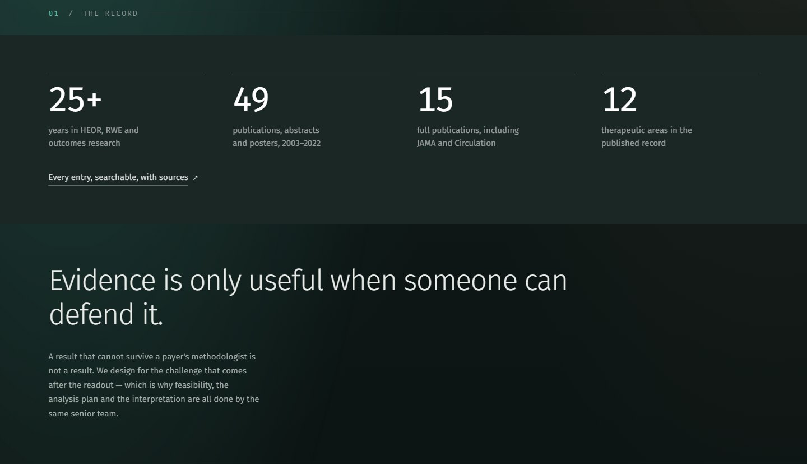
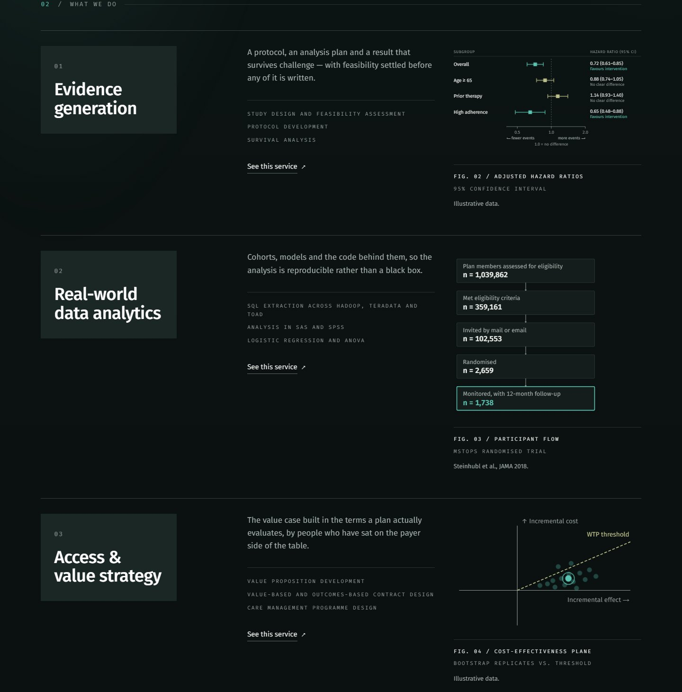
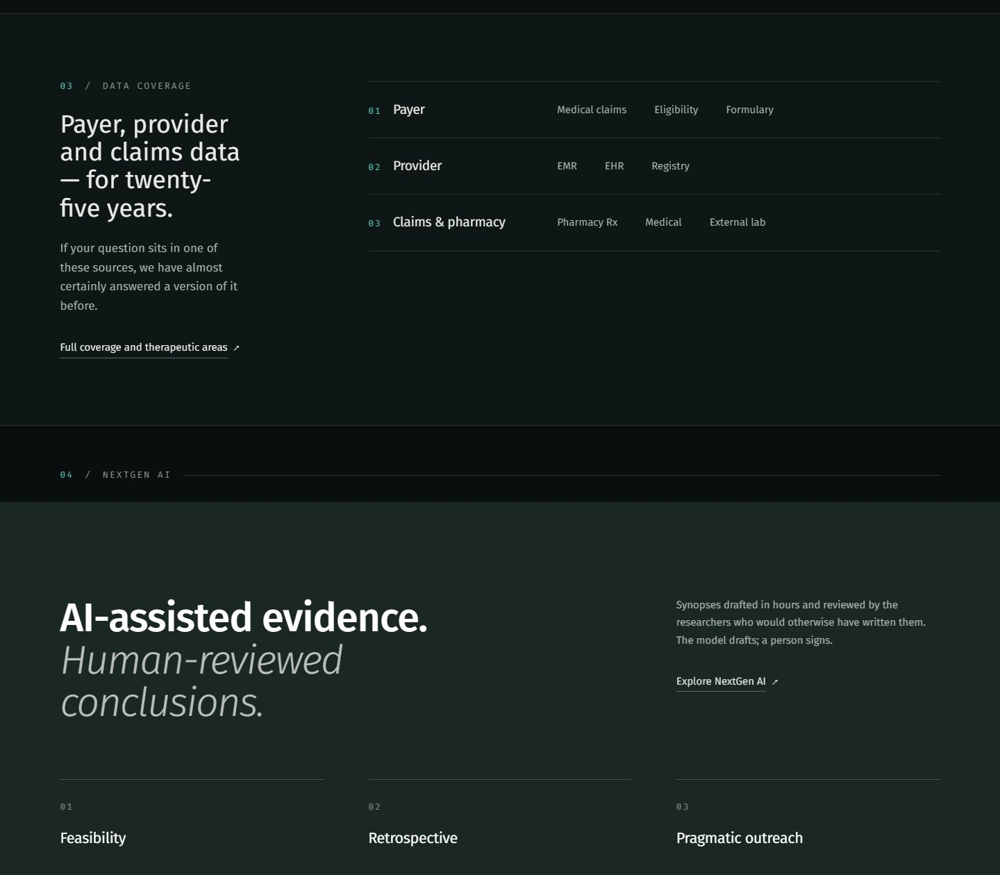

Work / 11 / Healthcare
Evidence That Holds Up
The brief
What was
in the way
Pharmatiya designs health economics and real-world evidence studies for payer, provider and claims data. Its buyers are medical affairs and market access teams who distrust marketing and read evidence for a living. The existing site was a thin holding page: a logo, a search box and a line about experience.



What we did
The work
itself
We rebuilt it as an argument rather than a brochure. The hero is a live survival curve you can read with the arrow keys, the record of publications is counted and searchable, and each service is shown with the kind of figure it produces: hazard ratios, participant flow, a cost-effectiveness plane. The AI-assisted work is stated plainly, with human review at every stage. The palette is quiet and clinical so the data does the talking.